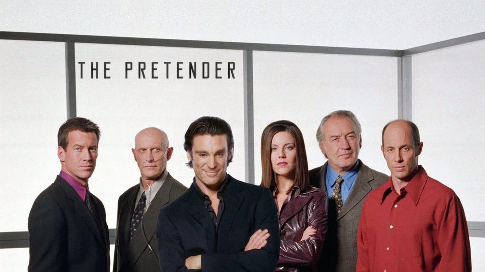

J'avais 14 ans quand j'ai regardé pour la première fois Le Caméléon. La série passait le samedi soir sur M6, dans la « Trilogie du samedi ». Avec ma mère, nous ne rations jamais un épisode de Jarod.
C'est la musique du générique qui a d'abord retenu mon attention. Puis il y avait le Centre, et Miss Parker, qui traquait Jarod. Et Sydney, une sorte de père pour lui, qui l'aidait en secret.
Je ne l'ai pas revue récemment, mais j'en garde un fabuleux souvenir.
Ce soir, on retrouve Jarod.

The Pretender, l'équipe de la série
Le Caméléon, c'est The Pretender en version originale. Une série américaine créée par Steven Long Mitchell et Craig Van Sickle. Elle est diffusée sur NBC du 19 septembre 1996 au 13 mai 2000. Au total : 4 saisons et 86 épisodes d'environ 46 minutes.
Michael T. Weiss joue Jarod. Andrea Parker est Miss Parker, Patrick Bauchau est Sydney, et Jon Gries joue Broots. Harve Presnell est Mr. Parker.
La série est produite par Mitchell/Van Sickle Productions et NBC Studios, avec MTM Enterprises pour la première saison, puis 20th Century Fox Television pour les suivantes. Le thème musical est signé John Debney, avec d'autres compositeurs. Deux téléfilms prolongent l'histoire en 2001, sur la chaîne TNT.
En France, c'est M6 qui la diffuse, du 4 avril 1997 au 10 février 2001, dans « La Trilogie du samedi ».
Le Caméléon s'inspire d'un personnage réel : Ferdinand Waldo Demara, un imposteur célèbre. Les créateurs, Steven Long Mitchell et Craig Van Sickle, en font un héros qui change d'identité pour réparer des injustices.
Le pilote est tourné à Toronto, au Canada. L'usine de traitement des eaux R. C. Harris sert à représenter le Centre dans les scènes de transition. Après le pilote, la production s'installe à Los Angeles.
La série fait partie du bloc du samedi soir de NBC, baptisé « Thrillogy ». Les débuts sont discrets : 7,2 millions de téléspectateurs en moyenne la première saison. Le public monte à 11,4 millions en saison 2, son meilleur niveau, puis redescend à 10 millions, puis 8,7 millions.
À la fin de la saison 1999-2000, NBC arrête toute sa programmation du samedi soir, et la série avec elle. La saison 4 se termine sur un cliffhanger : Jarod et Miss Parker près d'une bombe qui explose, sans qu'on sache s'ils survivent.
Mais les fans se mobilisent. En octobre 2000, TNT commande deux téléfilms. Le premier est diffusé le 22 janvier 2001, le second le 10 décembre 2001. Tous deux se terminent sur un cliffhanger, et TNT n'en commandera pas d'autres.
Côté musique, deux compositeurs du thème, Mark Leggett et Velton Ray Bunch, sont nommés en 2000 pour le meilleur générique.
Le Caméléon (The Pretender)
Jarod est un « Caméléon » : un prodige capable de maîtriser presque n'importe quel métier en un temps record, et de se faire passer pour quelqu'un d'autre.
Enfant, il a été enlevé par le Centre, un institut de recherche installé à Blue Cove, dans le Delaware. Là, on l'a entraîné à travers des simulations, sous la direction de Sydney, un psychiatre qui l'a élevé. Devenu adulte, Jarod s'échappe.
Le voilà en fuite. À chaque épisode, il prend une nouvelle identité : médecin, avocat, soldat, pilote. Chaque fois, il enquête sur un crime dont un innocent a été accusé. Et il démasque les vrais coupables, souvent en leur tendant des pièges qui leur font revivre le mal qu'ils ont causé.
Derrière lui, le Centre lance Miss Parker, une redoutable chasseuse qui le connaît depuis l'enfance, et Broots, un expert en informatique. Sydney fait partie de l'équipe, mais il répugne à faire du mal à Jarod.
Et entre deux affaires, Jarod cherche aussi à savoir d'où il vient, et à retrouver sa famille.
Le Caméléon repose sur une idée simple et efficace : un héros qui peut être n'importe qui. À chaque épisode, Jarod endosse un nouveau métier pour réparer une injustice. Et il le fait à sa manière : en tendant aux coupables des pièges qui leur font revivre le mal qu'ils ont causé.
Mais la série ne se résume pas à une enquête par semaine. Elle mêle des épisodes autonomes et une histoire qui avance, autour des secrets du Centre, de l'identité de Jarod et de sa famille.
Les thèmes, ce sont l'identité, d'abord : celle que le Centre lui a refusée, et que Miss Parker remet elle aussi en question. La justice, ensuite. Et la loyauté, qui vacille chez Miss Parker comme chez Sydney.
À sa sortie, la critique est loin d'être conquise. Variety parle d'une série dérivée, avec un « scénario terne » et une « réalisation maladroite ». Elle y voit un mélange de Zelig, The Fugitive et Quantum Leap, entre autres. Mais le critique salue l'« attrait sincère » de Michael T. Weiss, et surtout Miss Parker, qui « cabotine et séduit brillamment ».
Pour moi, c'est là que la série prend sa force : dans ses personnages, Miss Parker, Sydney, et ce Centre dont on ne voit jamais le bout.
Le Caméléon, le visuel français
Pourquoi Le Caméléon est-elle sortie de la mémoire collective ? Plusieurs pistes, que les faits permettent d'avancer.
D'abord, la série n'a jamais été un énorme succès. Aux États-Unis, elle ne dépasse pas la 59e place des audiences, et retombe à la 75e en dernière saison. Elle tourne le samedi soir, une case difficile, et à la fin de la saison 1999-2000, NBC arrête toute sa programmation du samedi soir.
Ensuite, la fin n'est jamais venue. La saison 4 se termine sur un cliffhanger. Deux téléfilms sont tournés en 2001, mais ils se terminent eux aussi sur un cliffhanger, et TNT n'en commandera pas d'autres. Les créateurs disent qu'une fin était écrite, mais qu'il fallait la financer. En 2013, ils annoncent un retour sous forme de livres et de bande dessinée.
Puis il y a la vidéo, plus lente à arriver que la série n'a duré. La première saison sort en DVD aux États-Unis en mars 2005, cinq ans après la fin de la série. En France, les saisons 3 et 4 et les téléfilms sortent en septembre 2008.
Pourtant, Le Caméléon n'a jamais vraiment disparu. Elle a été rediffusée sur RTL9 en 2020, sur AB1 en 2021, puis sur 6ter à partir du 2 février 2026, en journée, entre 16 h et 21 h. Elle n'est pas oubliée, elle attend simplement qu'on la regarde de nouveau.
Pourquoi redécouvrir Le Caméléon ?
D'abord, parce qu'elle se regarde facilement. Chaque épisode raconte une histoire complète : Jarod prend une nouvelle identité, répare une injustice, puis repart. On peut y entrer par n'importe quel épisode, sans avoir tout suivi.
Ensuite, parce qu'il y a un fil derrière. Miss Parker et Broots poursuivent Jarod, Sydney le soutient, et Jarod cherche sa famille. Cette traque donne à la série son fil rouge, d'une saison à l'autre.
Puis, parce que la série pose une vraie question : que fait-on de ses talents ? Jarod pourrait fuir et se cacher. Il choisit de se servir de son don pour aider les autres, et c'est ce qui rend le personnage attachant.
Enfin, parce qu'elle est de nouveau facile à retrouver : elle repasse sur 6ter depuis février 2026. La fin reste ouverte, mais la série se regarde avant tout pour son parcours.
Le Caméléon, c'est l'histoire d'un homme qui a pu devenir n'importe qui, et qui a choisi d'être quelqu'un de bien. Une série du samedi soir, avec son thème musical, son Centre, sa Miss Parker, son Sydney, et un Jarod qui court après ses propres racines.
Elle n'a jamais eu sa vraie fin, mais elle n'a jamais cessé de revenir, à la télévision, encore aujourd'hui. Peut-être parce qu'on a toujours envie de savoir qui est Jarod, et ce qu'il va être demain.
Merci d'avoir regardé ce nouvel épisode de SOMEDAY. Et si, comme moi, vous avez gardé un souvenir de ces samedis soirs devant la télévision, dites-le-moi par mail.
La cassette est dans le lecteur. On rembobine.
Titre original
The Pretender
Pays
États-Unis
Genre
Drame · Action
Diffusion
NBC, 1996–2000 (4 saisons, 86 épisodes)
Créateur
Steven Long Mitchell · Craig Van Sickle
Production
Mitchell/Van Sickle Productions · NBC Studios
Musique
John Debney (thème)
Fil conducteur
Séries TV cultes — EP. 14
SOMEDAY — SÉRIES EP. 14